Current positioning
I focus on multimedia design roles between visual storytelling, interactive systems, and technical implementation. My work spans Unity XR, UE Blueprint, generative workflows, visual design, and data storytelling.
Multimedia design portfolio
I am Yu Fan, a bilingual multimedia designer and creative technologist building projects that connect visual design, interactive systems, playful learning, and technical execution.
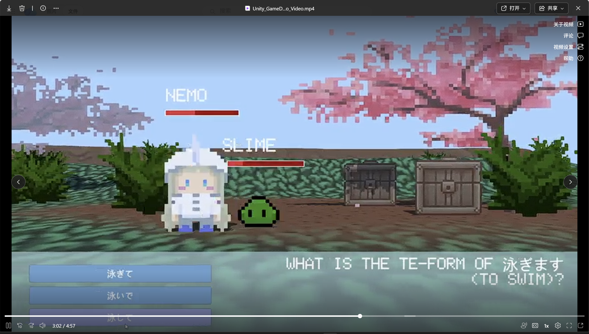
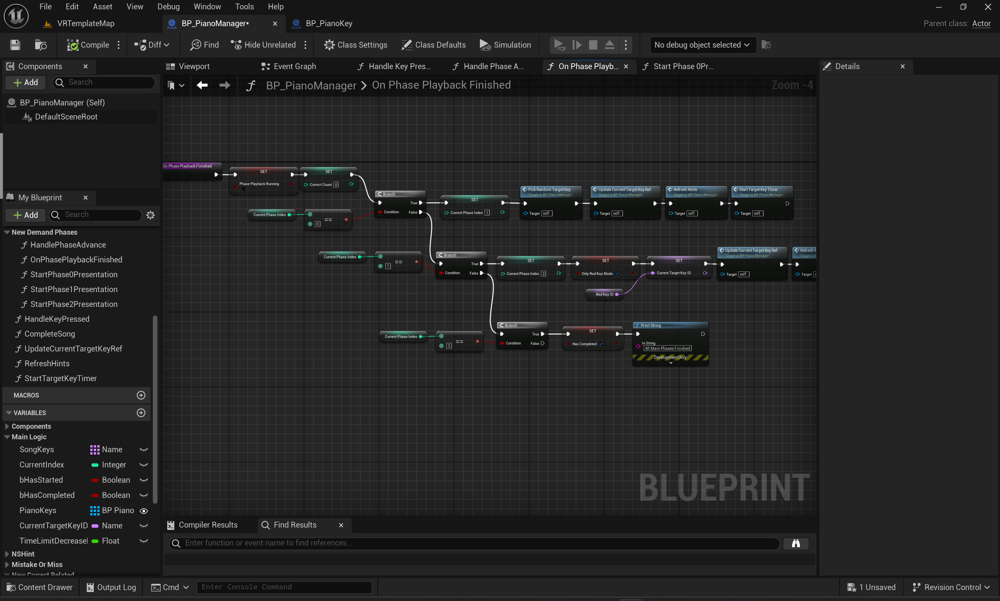
Choose your path
Toggle the lens
About
I focus on multimedia design roles between visual storytelling, interactive systems, and technical implementation. My work spans Unity XR, UE Blueprint, generative workflows, visual design, and data storytelling.
Selected work
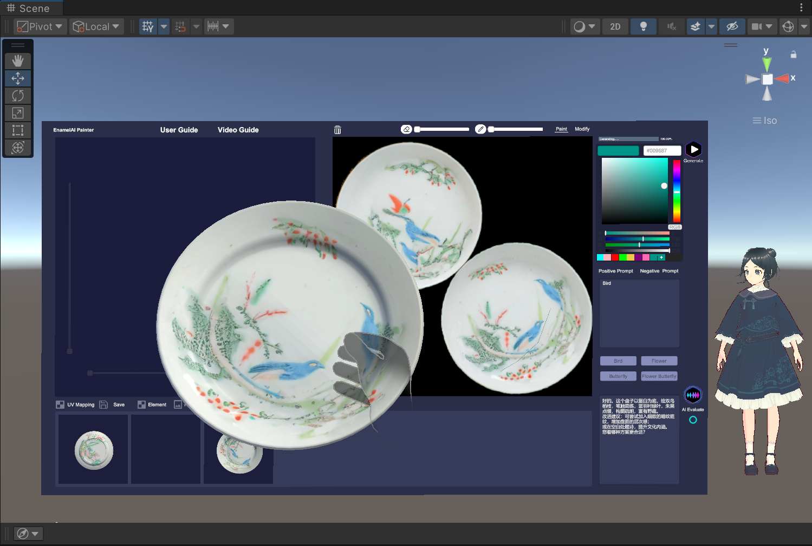
Research-center volunteer work exploring ceramic-themed interaction, OpenXR pipelines, MetaSDK integration, and scene setup in VR environments.
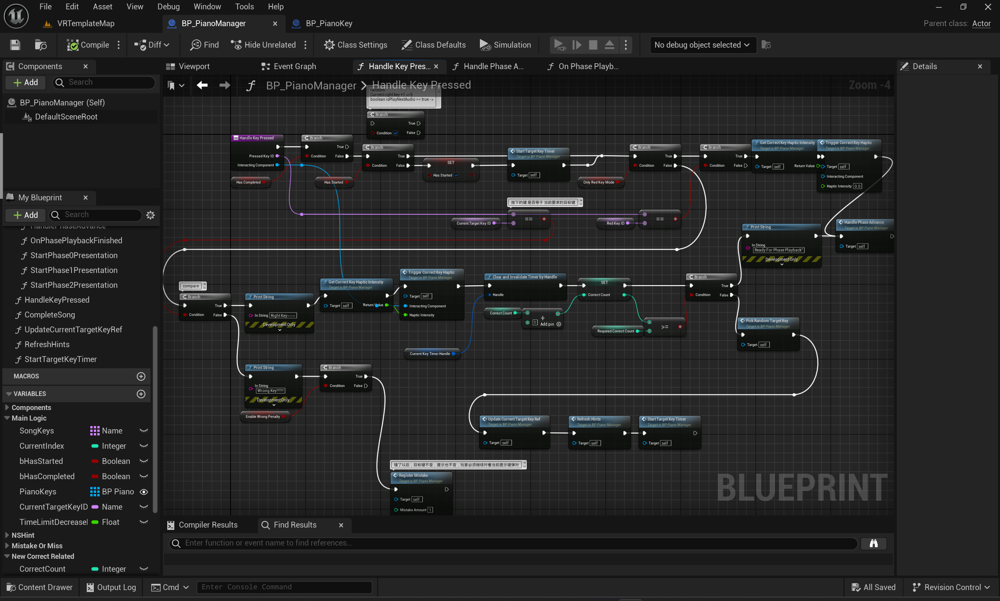
A set of Unreal Engine studies focusing on Blueprint logic, piano interaction, readable node-based workflows, and early-level learning outcomes.
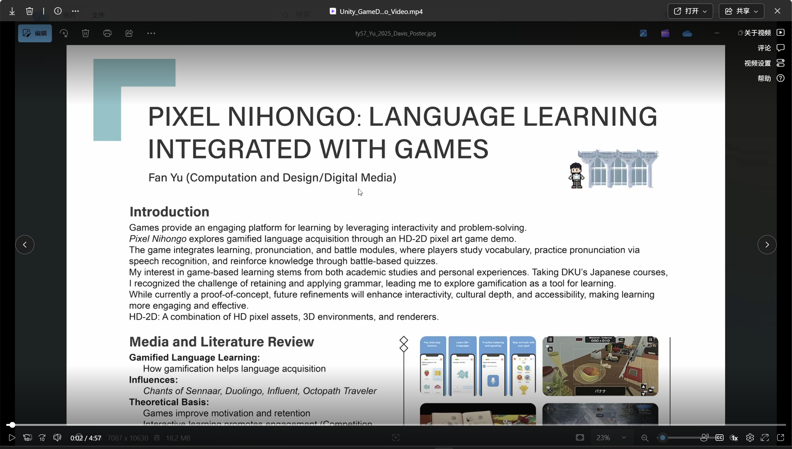
An undergraduate capstone for Japanese language learning through adventure gameplay, answer-based combat, and pronunciation practice in a Unity-built world.
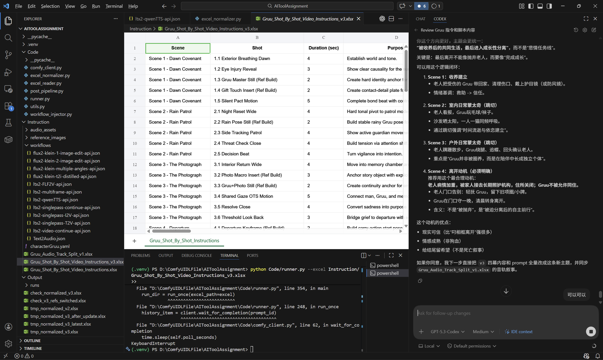
A process-focused project combining generative workflows, tool experimentation, and reflective documentation for creative production.
A poster-format data visualization project documented as a final PDF.
A final poster project combining data collection, visualization, and narrative framing. The PDF is included directly as project evidence.
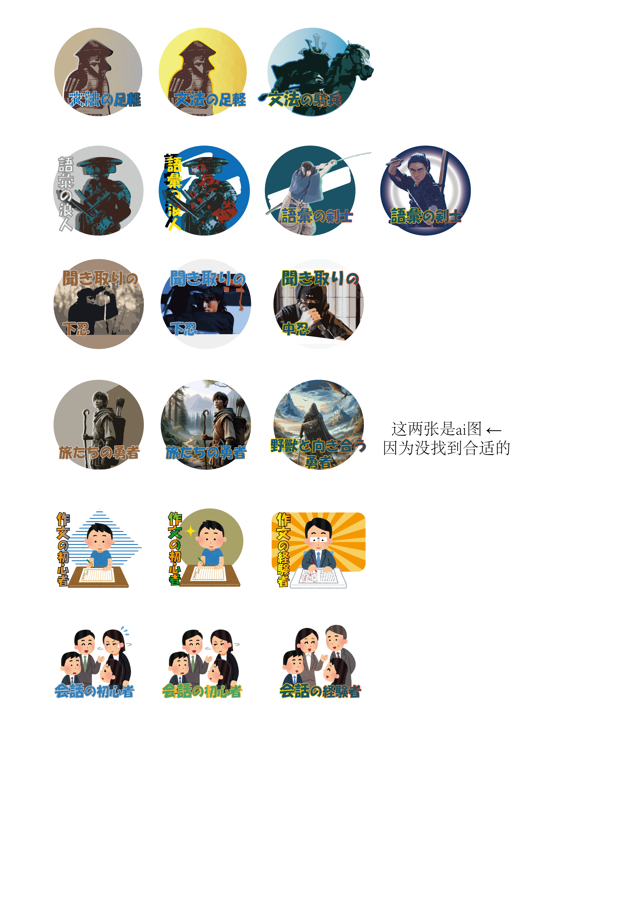
Sticker and promotional material design for DKU Japanese courses, balancing educational motivation with cultural references and print decisions.
Skills
Adobe Illustrator, Procreate, Procreate Dreams, Aseprite, Blender, DaVinci Resolve
HTML, CSS, JavaScript, Python, C, R, Stata, Arduino, Unity XR, OpenXR, MetaSDK, UE Blueprint
ComfyUI workflows, game-based learning, visual communication, process documentation, and bilingual presentation.
Timeline
MSc in Innovative Multimedia Entertainment.
Worked with VR interaction, ceramic-themed scenes, OpenXR setup, and MetaSDK-related implementation.
Designed a playful learning loop that turns language progress into game interaction.
Led student video production tasks and designed sticker materials for course communication.
Dean's List, scholarship support, TOEFL 96, CET-4 618, Tencent game-art related learning.
Visual archive
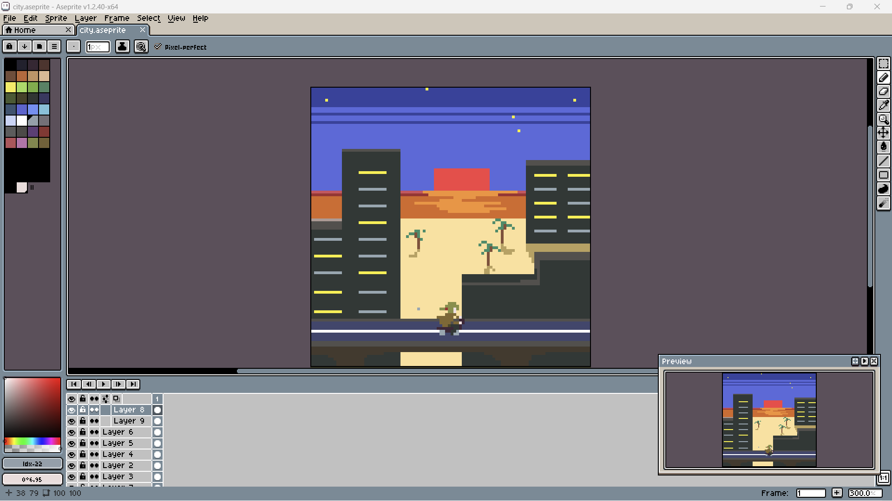
I use older cityscape, texture, and environment images here to show the visual atmosphere that often informs my newer work.
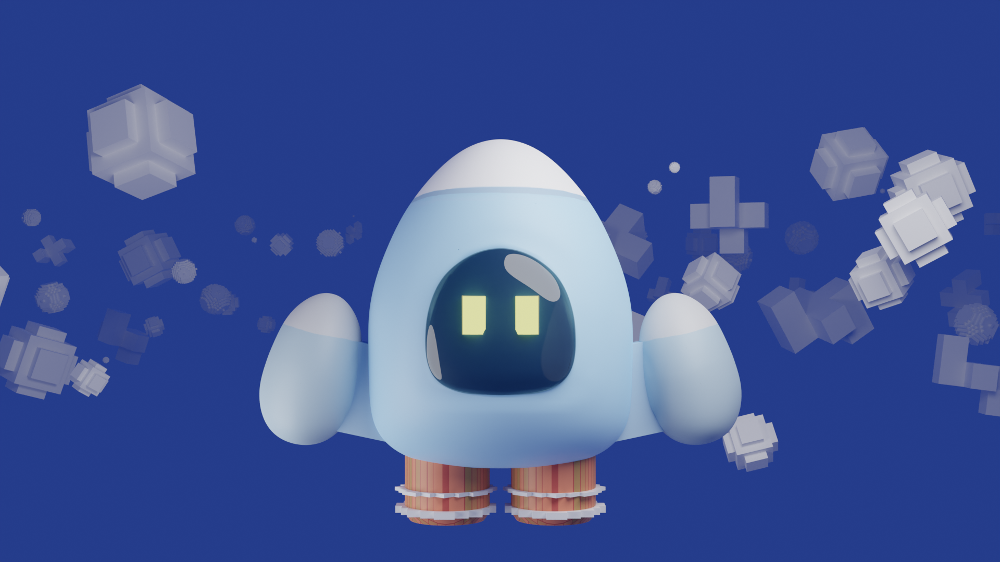
The mascot render and Arduino project photos remain useful as evidence of earlier making, prototyping, and playful object-based thinking.
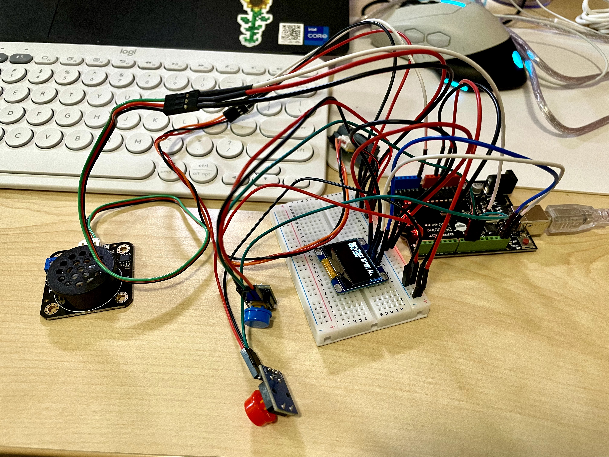
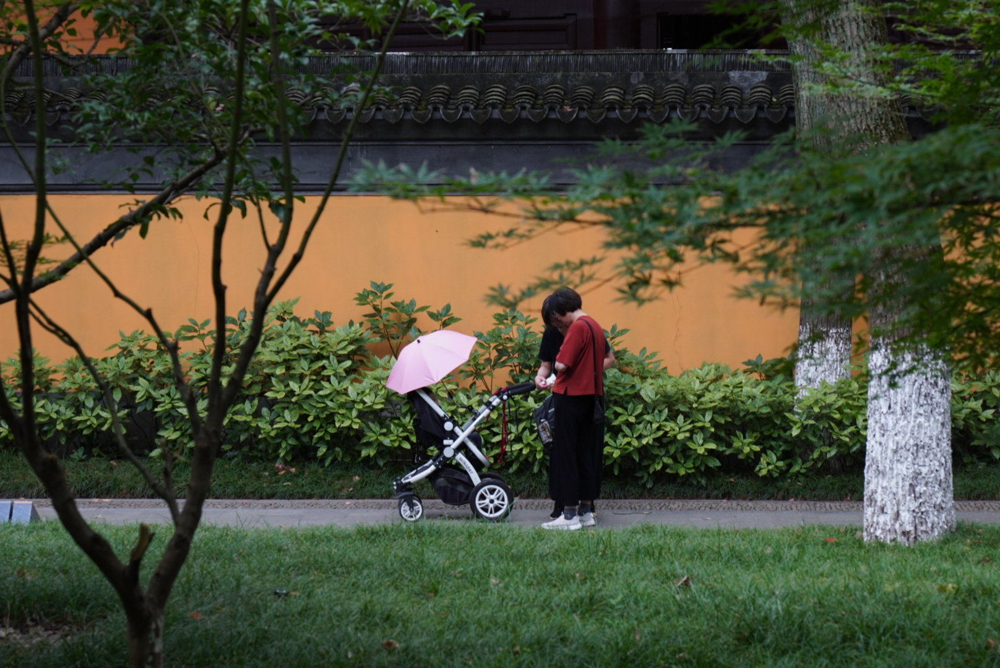
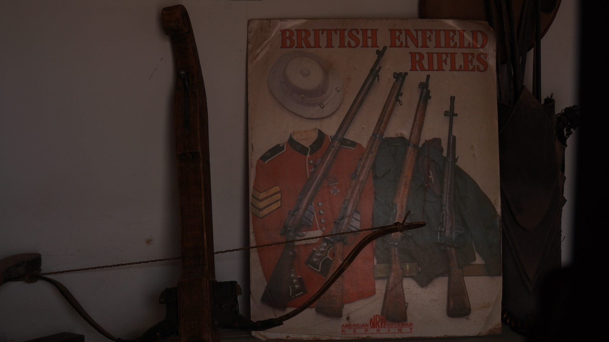
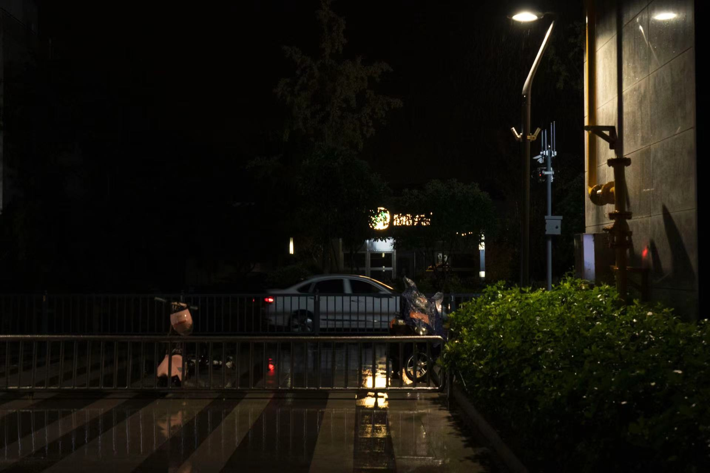
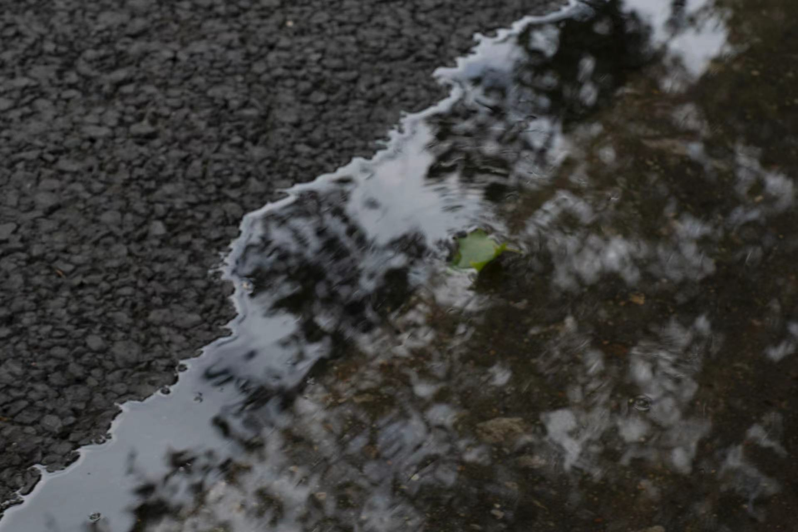
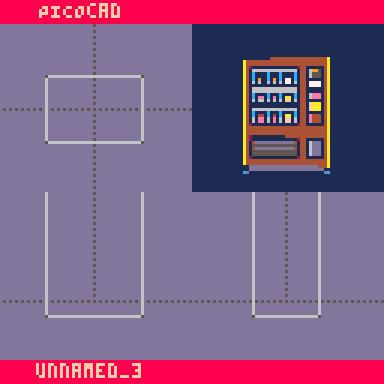
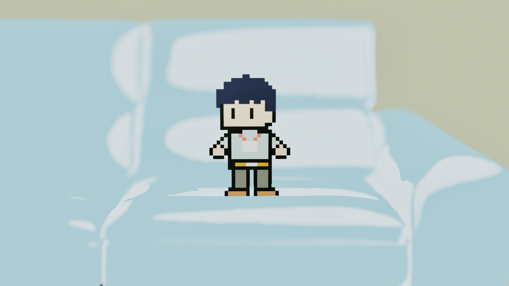
Contact